前言
不知道是不是我的心理错觉，怜司在这一部给我的感觉没有那么s了，反而还像一个恨铁不成钢的老母亲。奖罚分明，绫人拿走他的眼镜嫁祸给唯，也知道是绫人做的，没有迁怒在唯身上。考试没有考满分就得一直学习，还不让吃饭。这就是执事系吗。
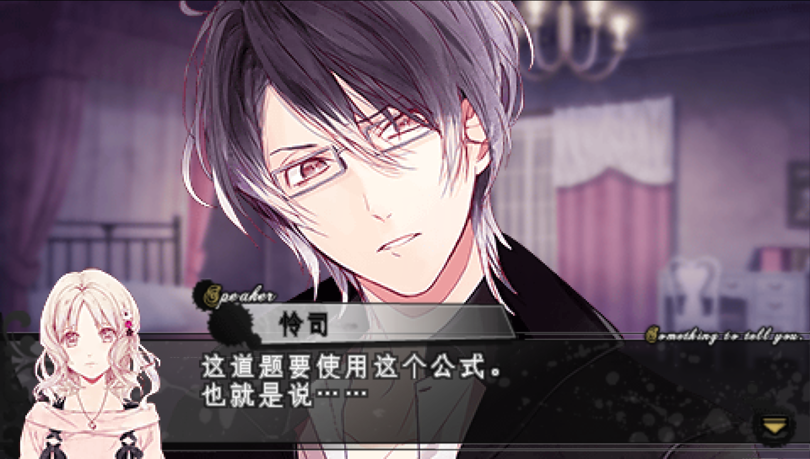
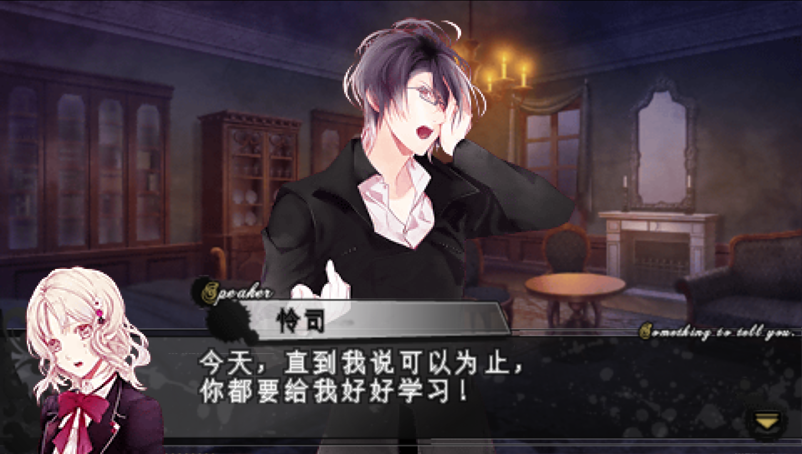
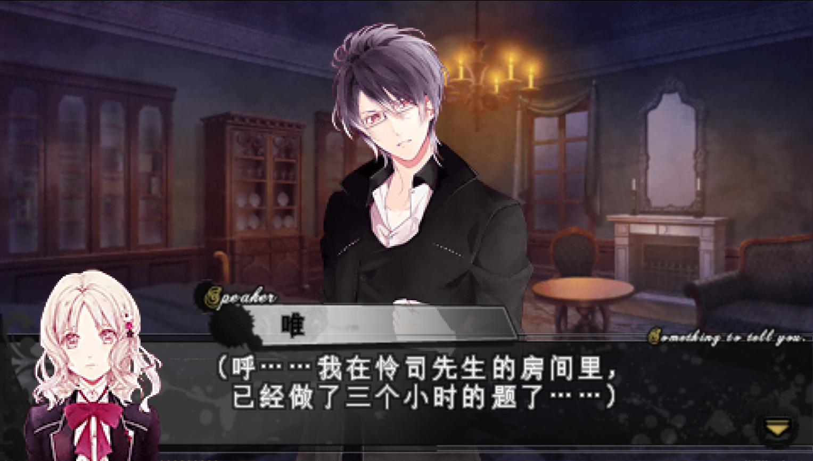
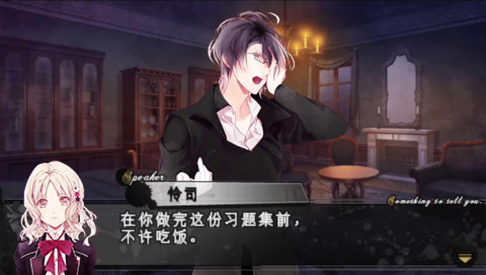
剧情
知道事情有异常，直奔无神家甚至住别人家，所有剧情基本都在无神家，对应的可能是悠真，毕竟是之前他点火烧的村子。但是悠真也真是个好人啊，虽然结局太偏激了。一个爱甜食的种田boy，还会分享糖、西红柿和苹果。
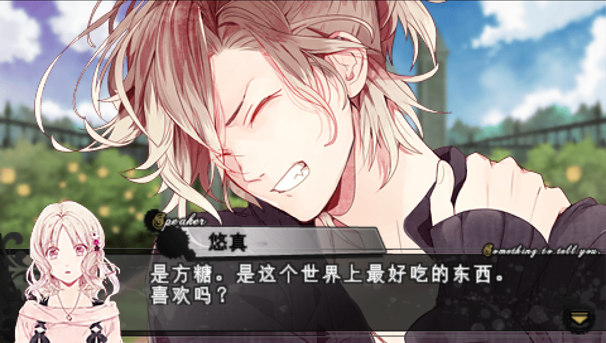
选项里只要基本顺着怜司的话就没有太大问题，彬彬有礼的，甚至也会把唯当做淑女，虽然那时候是拿生姜水骗唯，我看着就是开玩笑的程度。
唯泡了第五次的红茶终于被认可的时候会摸她的头，唯的脏衣服会先被怜司拿去洗，说是不想让她感冒之类的麻烦自己，会把自己的衬衫给唯。这个场景居然连一个立绘都不给，我真的很想看男友衬衫！会嘴对嘴喂茶，看到唯瘦了会亲自下厨，贫血会做药要唯一滴不剩的喝下去，心情好的时候会让唯跟他跳舞，这也太纯爱了。
因为要变成亚当，似乎会变得更加渴望吸血，但是怜司一直压抑着自己的欲望，一直不让唯靠近自己，唯为了不给怜司添麻烦，就自己在走廊睡着了，等到怜司发现之后就抱了她回床上，而他自己睡在走廊上。
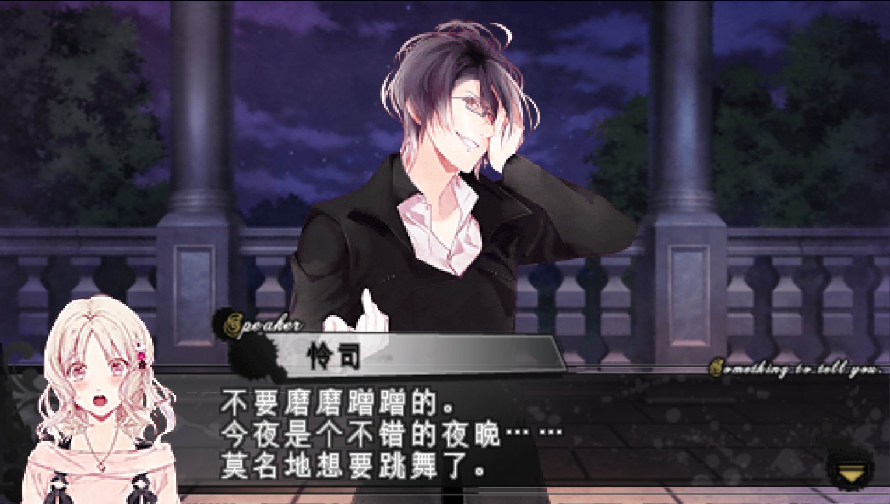
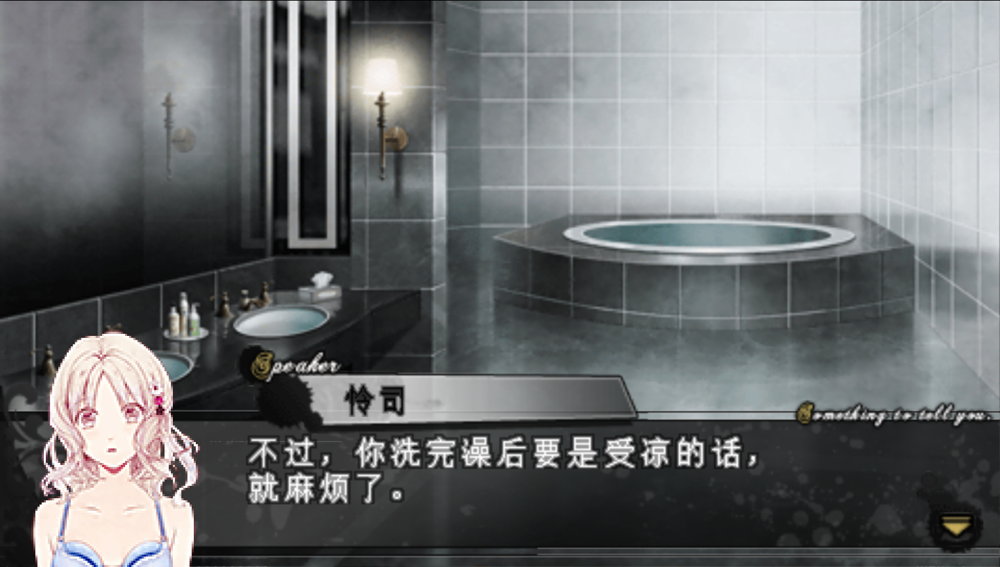
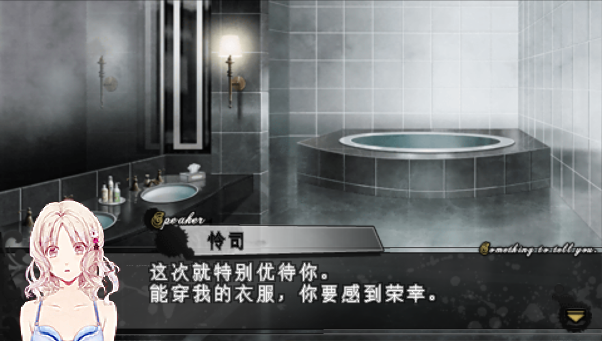
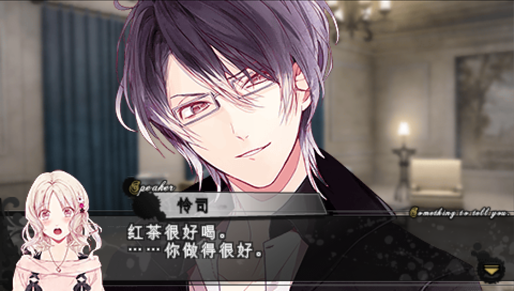
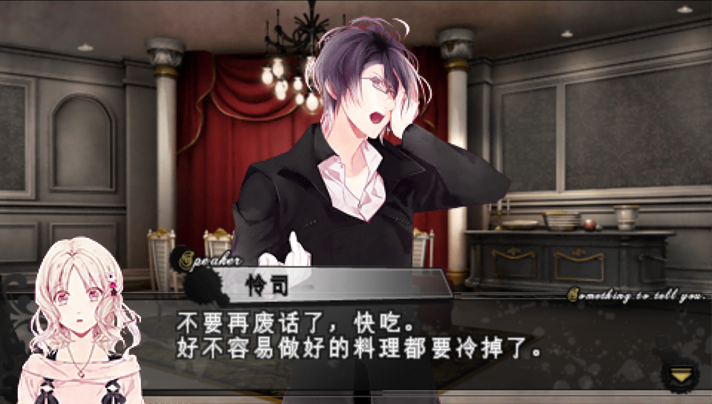
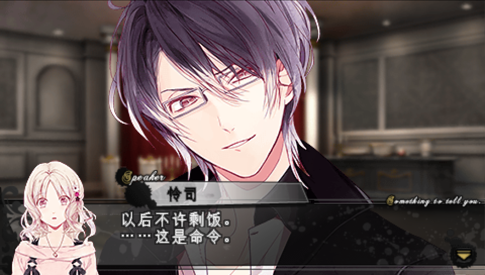
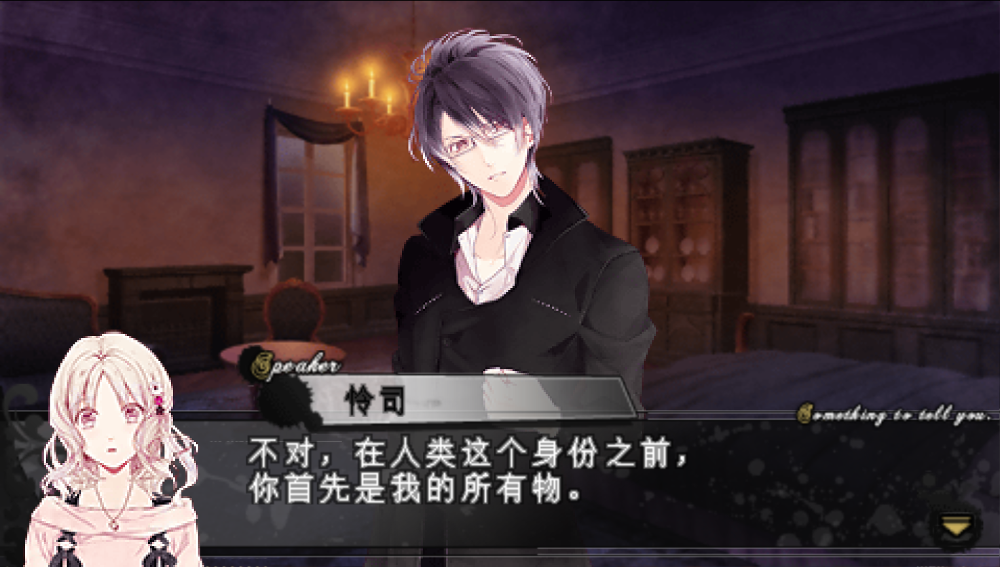
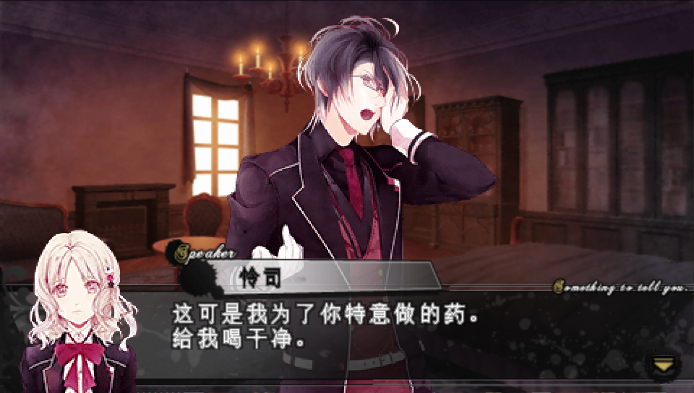
结局
怜司一直渴望得到认可，母亲每次在夸奖他之后会让他之后辅助修，修也保持着没有干劲的模样，所以导致了怜司想要毁灭整个家族。
在最后的剧情里怜司绑架了悠真，准备在修面前再次杀了他，但因为不想跟唯分开，被修拿唯当了人质，从剧情上看说是为唯挡下了攻击，但是cg上我看着是怜司自己造成的致命伤。
最后怜司和修也说开了，互相认同了彼此。但是怜司却受伤昏迷了，在昏迷之前对着唯说将他的头砍下，避免他再次复活，准备为了死去而赎罪。两个人告白，怜司就陷入沉睡了。之后就是艾尔海因茨的出现，进入三个结局。
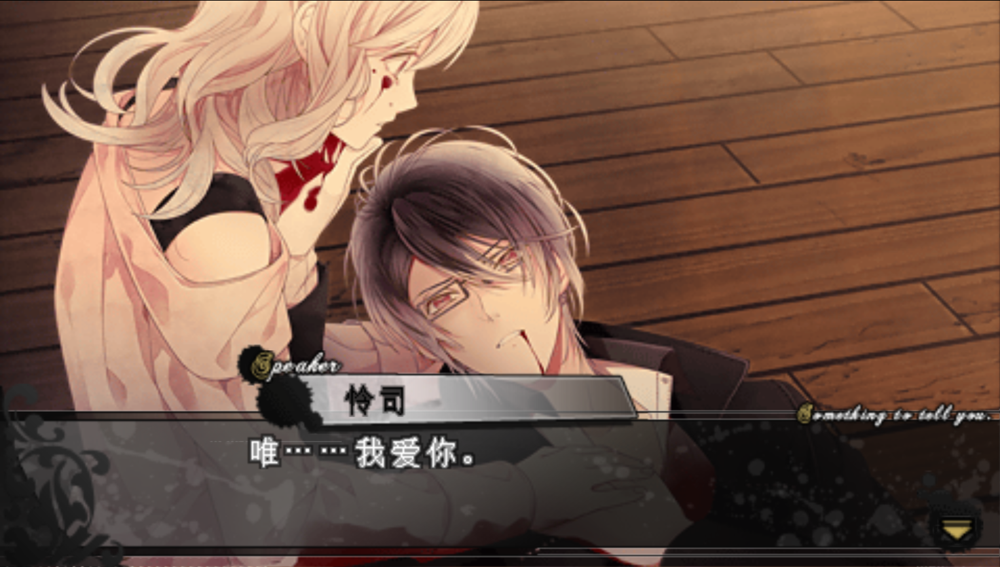
男仆结局真的就是纯be了，怜司醒了过来，之前的反省和什么赎罪就当从来没有发生过，觉得还是要把所有吸血鬼全杀了才行，让唯给他帮忙，杀掉最后一个绫人的时候又把唯给杀了，准备去杀掉父亲，虽然在不知不觉中被艾尔海因茨杀掉了。
但是这个结局其实也可以嗑！怜司杀掉唯的时候才会说这下没有退路了，他真的就是把唯当做他能后悔的人，只要唯没了他就不会犹豫了。
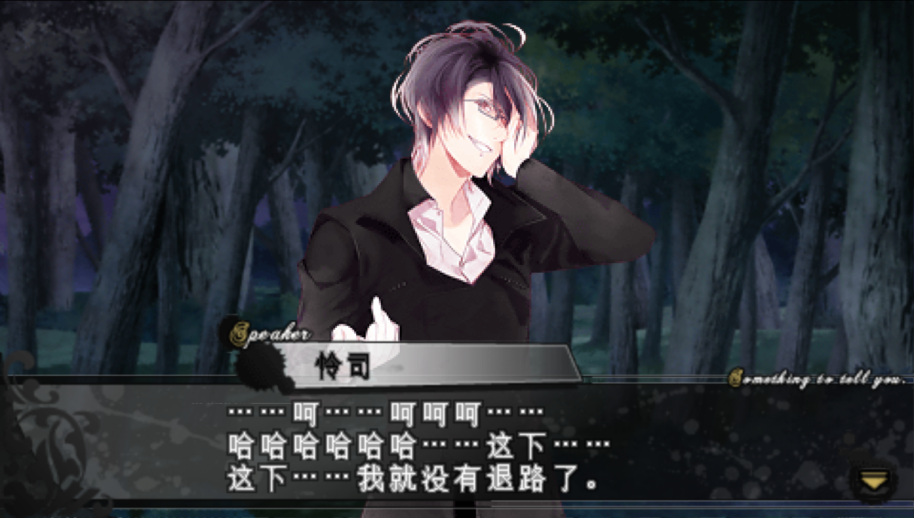
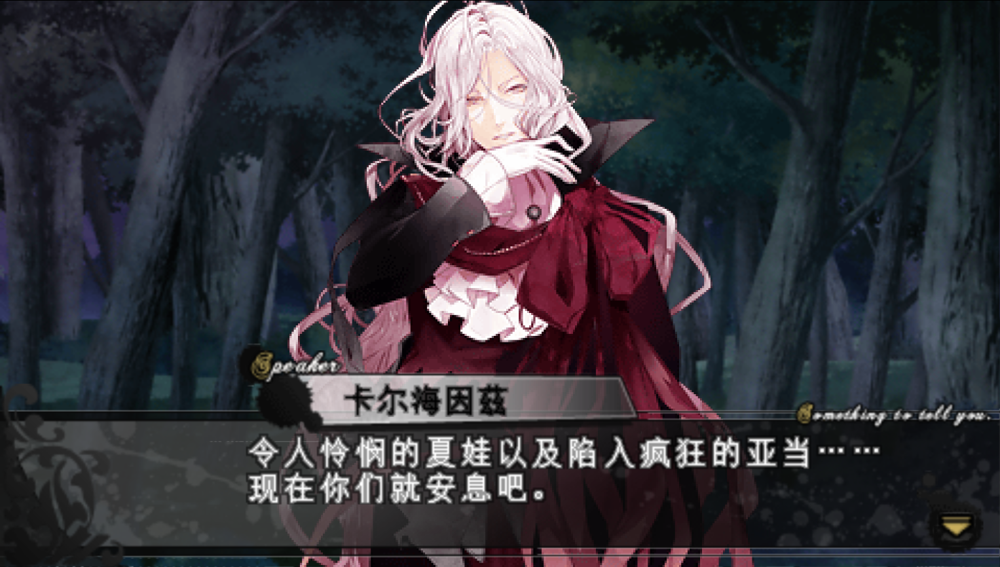
兽性结局里多了被怜司药晕的悠真，唯一起照顾着昏迷的怜司和悠真。虽然我不知道为什么要把这两个人放在一起照顾，不过悠真是先醒的那个，他恢复了记忆，准备把怜司重视的唯夺走，但是怜司却刚好醒了过来，所以悠真在怜司面前杀了唯。
吸血鬼结局是真的大团圆，大家都活着。唯一直照顾着沉睡的怜司，直到有一天绫人过来捣乱，唯跟他在拉扯中陷入了昏迷，看到了小时候的怜司。
小时候的怜司也会开玩笑拿着蜂蜜骗唯说是药，但是也有真的自己制作的药物，是为了经常受伤的兄弟们制作的，虽然大家都因为害怕而不会用。他真的从小就是一个温柔的人。
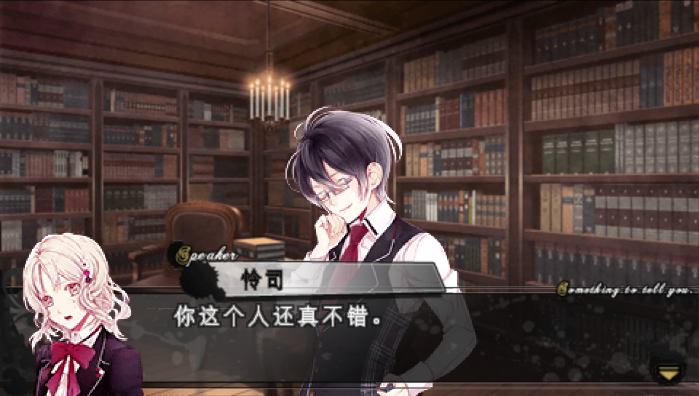
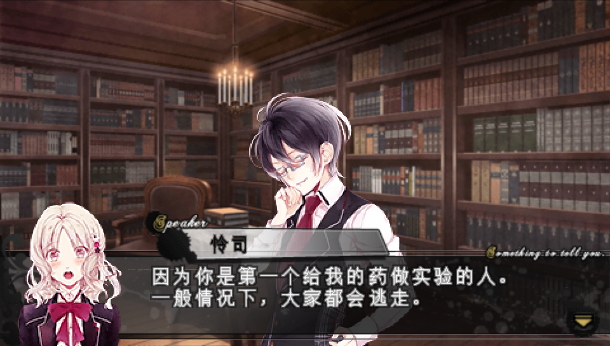
在那之后又遇上了成年的怜司，唯在跟抹杀自己忘记自己是谁的怜司聊天的后，听到破碎的声音，醒了过来。怜司当时已经醒来并且赶走了捣乱的绫人，也说自己是因为破碎的声音醒了过来。
在那之后，怜司和琉辉对话，开始不排斥逆卷家的次子这一称呼，从琉辉那得知悠真一切还好，跟往常一样在菜园种菜，也知道了伊甸园的计划是艾尔海因茨在背后操作。根据父亲和已故母亲的愿望，修成为了家主，怜司成为修的辅佐。
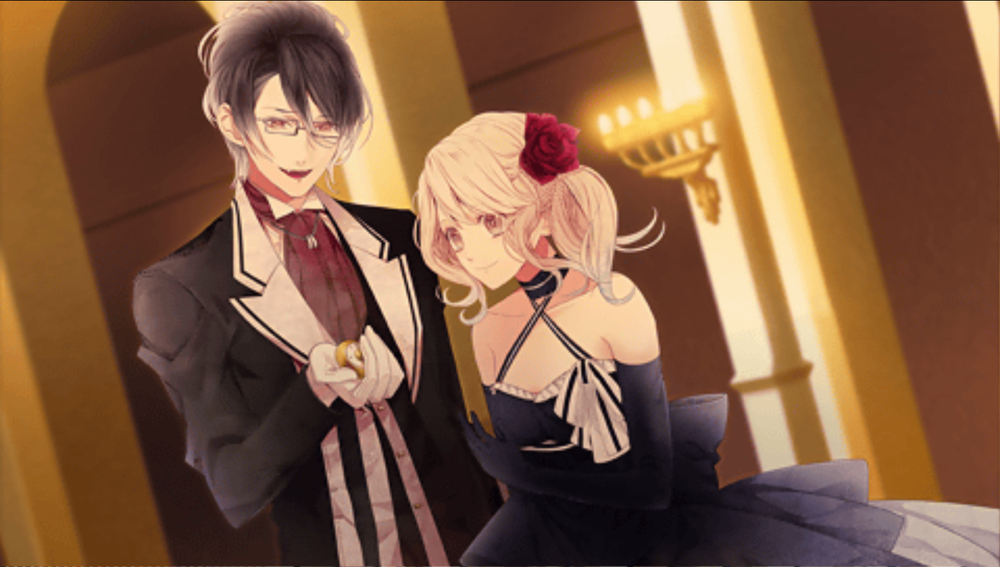
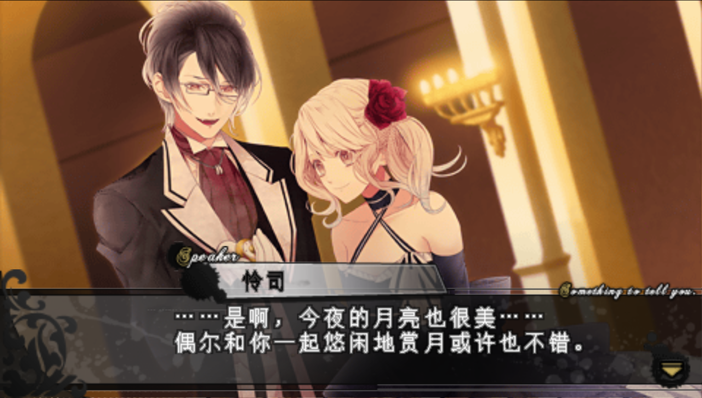
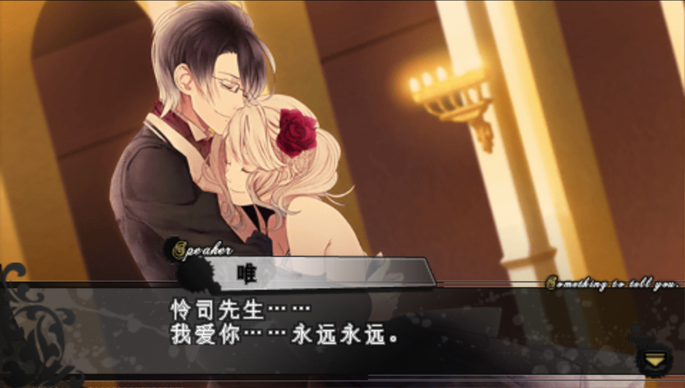
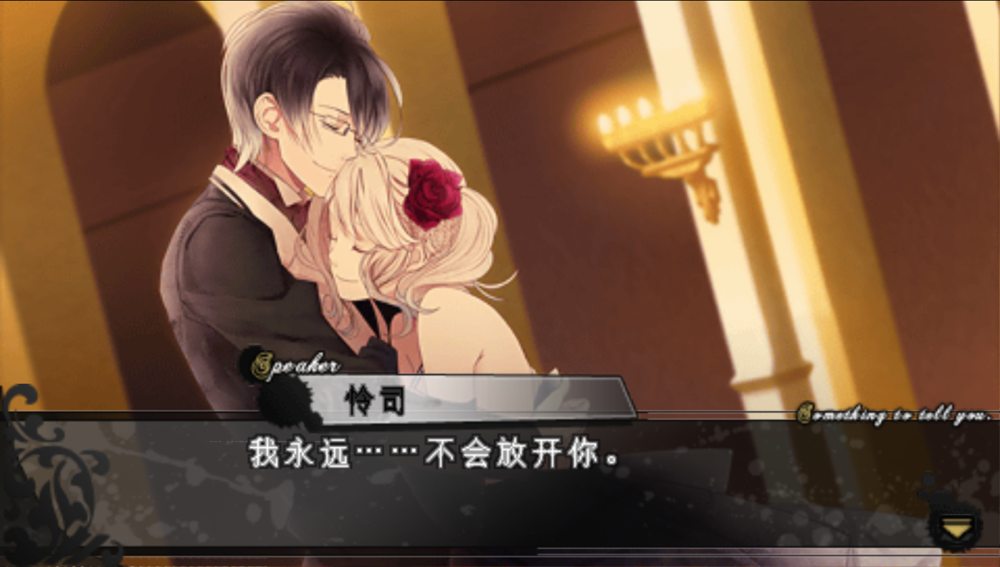
大团圆结局太久没见了，在魔恋也非常少见。怜司线真的整个剧情看下来就是非常温柔。
下一个打算应该是琉辉，应该近期就会打。以及最近不知道是图床还是我浏览器出了问题，害的煌线原本的图片全没了。难受
箱庭
混乱甜饼人